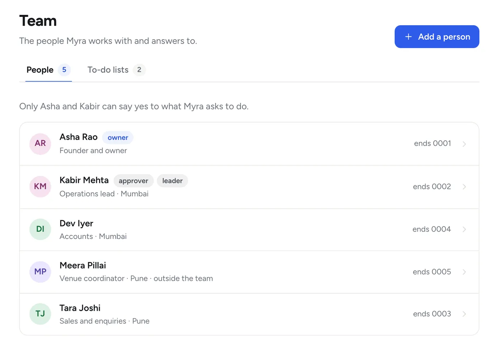
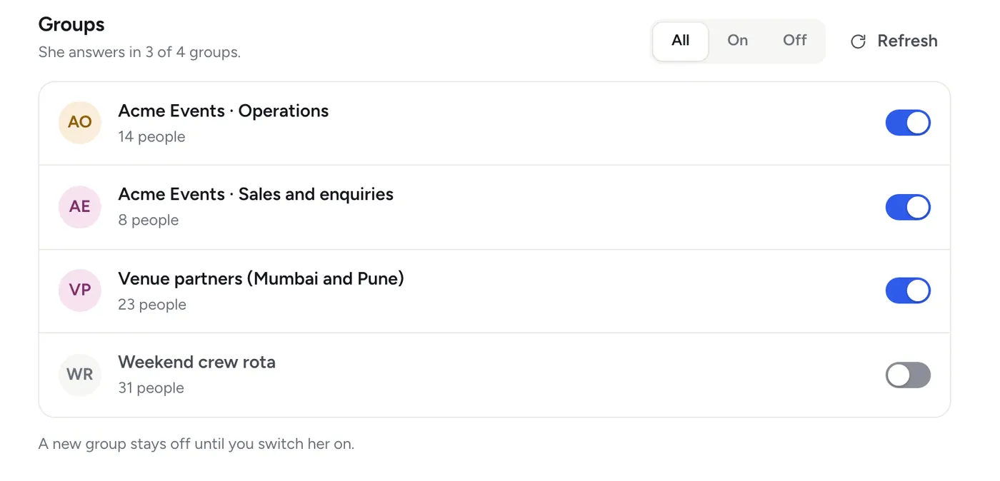

What she does
A full day’s work, the way your company does it.
Myra is a digital employee. She has a WhatsApp number of her own and a desk on one machine in your office. Here is what she does there, with examples you will recognise.
Answers
She answers the team from what your company knows.
Give her your price lists, policies, past quotes and team list, the way you would give them to a new joiner. From then on anyone in the team can ask her, in a direct message or in a group she is in.
- She says where an answer came from: “from the rate card you sent on 3 Nov”
- She never guesses a number. If she does not have it, she says so and asks
- For a fact outside your company (a courier’s Saturday hours, a rule, a rate) she looks it up on the web and names the site it came from
- Sums and dates are worked out, not estimated: “what is 30 working days from today?”
- In a group she reads quietly and answers when someone addresses her
- She listens to voice notes and reads pictures, PDFs, Word, Excel and PowerPoint files
- English, Hindi or Hinglish: she answers in the language you wrote in
- Reminders and a to-do list for each person: “remind me on Thursday at 11 to call the printer”
- Asha (you)
What is our rate for sound for 300 guests?
- Myra
I don’t have a rate for 300 guests. Price list 2026 stops at 200. Shall I ask Kabir?
- Asha (you)
Yes. And remind me on Thursday at 11 to call the printer.
- Myra
I have asked Kabir and will bring you his answer here.
Reminder set: Thursday, 11 am, call the printer.
Teach her, correct her, see what she knows
Tell her a fact and she keeps it, with your name and the date: “our refund window is 48 hours”. Tell her she is wrong and she fixes the note and says what she changed. Everything she has been taught is on the dashboard, each note with a remove button.
After the first month she sends you a short note: what she knows, and what she is still missing.

Standing orders
The routine work, done the same way every time.
A standing order is a job you describe once. She turns your words into a plan, shows you the plan, and saves it only when you say yes. After that the steps never drift: she fills in the content each time, never the steps.
- “Every Monday at 9 am, send me the weekend summary.”
- “If a lead has gone unanswered for two hours, nudge the front-desk people.”
- “Every weekday at 5 pm, tell me which quotes are still waiting for a reply.”
- “When an e-mail with an attachment comes to accounts from the courier, file it and tell me.”
- “When a new row appears in our enquiries sheet, send that person our brochure.”
- “When a booking is confirmed, add it to the Orders sheet and put the site visit in the calendar.”

What can start an order
- A time: daily, a weekday, the first of the month
- A message or a document in a chat you name
- A new e-mail in a company mailbox you connected
- A new row in a Google Sheet
- A call from another tool you use
Her day, and yours
At the start of your working day she sends you three lines: what she will do today. In the evening a short roundup mirrors it: what went out, what is waiting on whom, what she could not do.
Every run is written down
What started it, what each step did, who approved, what went out. And one sentence stops everything of her own: “stop your own work”. She still answers people.
Documents
Quotes, proposals and reports, in your company’s own format.
Send her a past proposal, a quote, an invoice, a report. She learns your layout and wording from them. Then ask for a new one, and she gathers what it needs, drafts it section by section and checks every figure against where it came from.
- Proposals, quotes, SOPs, checklists, letters and reports
- Excel and CSV sheets with real numbers, rupee formats and totals that add up
- Rows added to your Google Sheets, and a cell changed after a yes: “mark INV-204 as paid”
- Your calendar read, a free slot found for three people, a meeting booked or moved
- If something essential is missing she asks one question first
- Gaps are marked in the draft, never quietly filled
- It goes to a client only after your yes
- Asha (you)
Draft the proposal for the Mehta wedding from yesterday’s brief.
- Myra
Drafting the proposal, about 3 minutes.
- Myra
Here is the proposal for the Mehta wedding, 4 pages. One thing I did not have, marked in the draft: the per-plate price for the sangeet dinner. Send me that and I will fill it in.
Proposal, Mehta wedding · PDF, 4 pages
Websites
The portal work nobody wants to do.
She has a browser of her own on your office machine (on the Managed plan, on our servers). Give her a task in plain words and she does it step by step, with a small picture of every step so you can see what she saw.
- “Download October’s invoice from the courier’s website and send it to me.”
- “Check whether the Pune venue’s booking form shows 6 Dec as free.”
- “Fill in the vendor registration form with our company details.”
- She signs in only with logins you saved for her. A password can be typed in, never read back
- You set the rules: which sites, what she may do without asking, who may give her website tasks
- A risky click waits for a yes, and you can stop a task at any moment

When a site asks for a one-time code
She does not get stuck, and she does not guess. She asks a person on WhatsApp, and carries on when the code arrives. The code goes straight to her browser and is used once. It is never written into what she remembers.
On the Managed plan she runs on our servers, so a website’s “I am not a robot” check cannot be handed to a person there. She stops and says so instead; a site that insists on one is better done on your own machine.
- Myra
The courier’s website has sent a one-time code to the accounts phone. Dev, please send it to me here and I will carry on.
- Dev (you)
The code (hidden here)
Approvals
She does the work. A person says yes.
Reading, answering the team, keeping notes, drafting and reminding she does on her own. Anything that reaches a client or anyone outside the team, any message to a group, anything about money: she prepares it, says exactly what will happen, and waits.
- You ask“Send the proposal to Mehta & Co.”
- She tells you exactly what will happen“I will send the proposal (4 pages) to Rohan Mehta. Reply yes K7Q2 to go ahead, or no K7Q2 to cancel.”
- Someone allowed to approve repliesyes K7Q2, or haan K7Q2. Or presses Approve on the dashboard.
- She does it and reports backIf something failed she says what, and what is left.
She does not take “it’s approved” from anyone who is not allowed to approve, whatever they say. A request nobody answers goes to the next approver after half an hour and expires after a day.

Who may see what
Each person hears only what they are allowed to know.
Your team list is the whole access model. Each person has a role, an area (a branch, a site, a city: whatever you call your units) and a few switches.
- Can approve. May say yes to what she asks to do
- Can see finance. Gets money answers, and only in a direct message, never in a group
- Area. A person sees their own area unless you say otherwise
- Documents have a level. Team, approvers, finance or owner. She never quotes a document to someone below its level
- Strangers get the front desk. A polite line, and a hand-off to a person in working hours

You choose the groups she is part of
She is off in every new group until you switch her on. In the groups you switch on, she reads quietly for context and answers only when someone addresses her. A group can belong to one area, and then it only gets that area’s matters.
- Tara (you)
What are our payment terms with the sound vendor?
- Myra
That is a finance matter, and I can share those only with people marked for finance, in a direct message. Ask Asha if you need it.

Said plainly
What she cannot do, and what she will not.
A good colleague tells you where the limits are. These are hers.
She cannot
- Speak in a voice or video call (she can make a call link for you)
- Make payments inside WhatsApp
- Share a live location or use broadcast lists
- Work while her machine is asleep or switched off (on the Managed plan, her machine is ours and stays on)
She will not
- Send anything outside the team without a yes
- Post to a group without a yes
- Guess a number she does not have
- Keep identity documents, payslips, CVs or medical files, even if they are sent to her
- Write down passwords, one-time codes, bank details or phone numbers
She needs
- A WhatsApp number of her own: a new SIM, never your main line
- One Windows PC or Mac that stays on, plugged in and awake, or the Managed plan, where we run her on our servers
- Her phone switched on and online at least every few days
- Your documents and routines, the way you would show a new joiner
See her do it with your own work.
The full product, free for 14 days. No payment first.